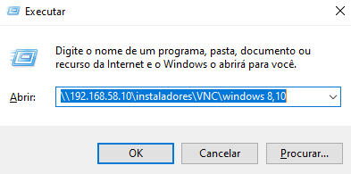
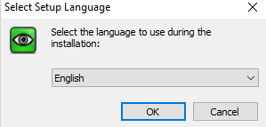
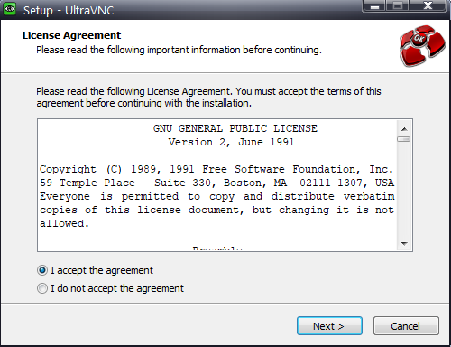
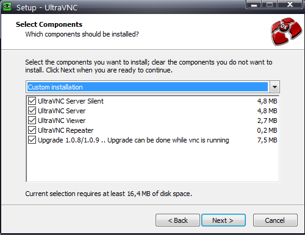
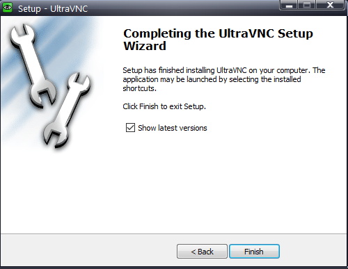

1. Pressione as teclas WINDOWS + R e digite o endereço: "\\192.168.58.10\instaladores\VNC\windows 8,10" na caixa de texto
2. Execute o arquivo conforme a arquitetura do Windows e selecione a linguagem
3. Aceite os termos e clique em Next duas vezes
4. Selecione todos os Check Box clique em Next duas vezes, depois clique em Install e em Next mais uma vez
5. Clique em Finish
